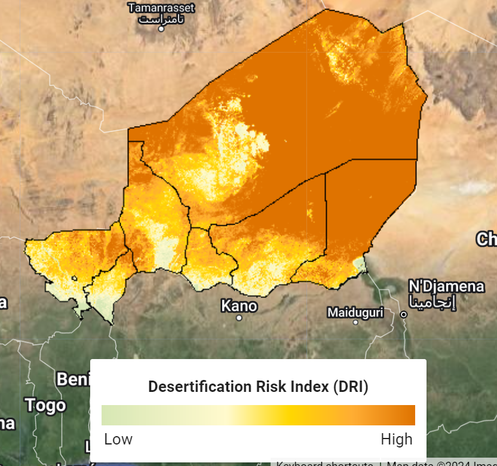
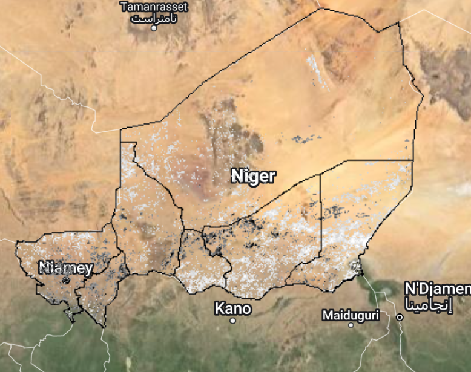
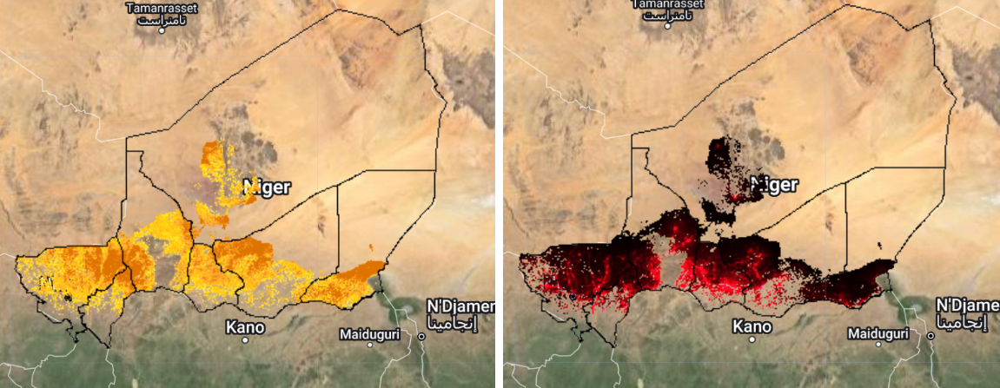
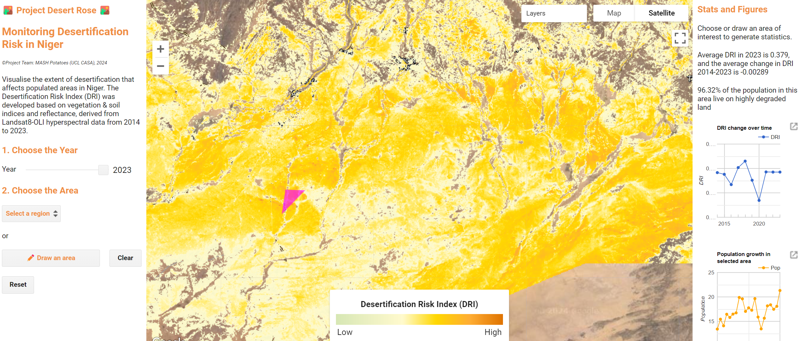

🏜️Project Desert Rose🏜️

Monitoring desertification risk in Niger
I. The Overview
Problem Statement
Niger, a landlocked country in Africa’s Sahel region, faces rising temperatures, low rainfall and a decrease in arable land, indicative of desertification. The shrinking land and water sources pose food and water security threats, risking humanitarian crises and conflicts. Initiatives like Action Against Desertification (FAO-UN) with its flaghsip project the Great Green Wall aim to restore degraded land and push back the desert.
However, as each task force operates independently, the nation lacks centralised visibility on nationwide desertification risks, making it difficult to mobilise the action plan with urgency and prioritise resources across diverse actors to the communities most in need.
End User
This application is meant for the local government, NGOs and different organisations so that there is a centralised platform where they can visualise to what extent desertification affects Niger people at high spatial resolution and which areas are seeing desertification worsen over the past decade.
Data Source
Three remote sensing Google Earth Engine data sets are used:
To derive the Desertification Risk Index (detailed methodology below), we used Landsat 8 OLI hyperspectral remote sensing data (2014-2023) containing all the necessary spectral bands for index calculation.
To quantify the affected population, we used the WorldPop global population raster data at 100m resolution (2000-2020).
Finally, to delineate the boundaries of interest, we will use Niger Administrative Boundaries, Level 0 and Level 1.
Methodology
According to Wu et al. (2019) and Yang et al. (2020), the Desertification Risk Index (DRI), which we have extracted from their Desert Matter Index (DMI), can be calculated using Landsat-8 remote sensing data, from which Albedo and Modified Soil Adjusted Vegetation Index (MSAVI) were calculated. according to the formula:
\[ DRI = L_1 = \sqrt{(MSAVI-1)^2 + Albedo^2} \]
This formula produces values where a higher DRI indicates greater risk of desertification. The use of Euclidean distance in this formula combines the deviations of MSAVI and albedo from their norms, providing a measure that is sensitive to changes in both vegetation cover and surface reflectivity.

It is worth noting that this methodology has shown relatively high accuracy in detecting and classifying desertification in the Naiman Banner in Inner Mongolia (China) but not specifically in the Southern Sahel where Niger is located. However, thanks to the fact that the two areas share similar characteristics in terms of wetness and vegetation, we see the application of this methodology as appropriate for the Southern Sahel region.
Interface
The user can select the year of interest and then the area of interest to produce various map layers and statistics:
By default, the map of high-risk areas will be shown, indicating the desertification level only in populated areas, excluding uninhabited lands such as the inner section of the Sahara Desert to the north.
When a region is selected, or an area of interest is drawn, statistics on the average DRI value and the percentage of the affected population will be shown. The user can redraw the area or reset the map anytime.
Finally, other layers of interest are (1) Population density in high-risk areas, (2) DRI nationwide in the year of choice, and (3) Change in DRI nationwide 2014-2023.
II. The Application
Access the GEE application in full here
III. The codes
Here are some highlights of what goes on behind the scene of the web app
Calculating Desertification Risk Index 2014-2023 from Landsat-8 dataset
First, we load the necessary Landsat 8 collection and the boundaries of Niger (level 1 and 0)
// Load country boundaries
var niger = ee.FeatureCollection("FAO/GAUL/2015/level0").filter(ee.Filter.eq('ADM0_CODE', 181));
var niger_1 = ee.FeatureCollection("FAO/GAUL/2015/level1").filter(ee.Filter.eq('ADM0_CODE', 181));
var nigerGeometry = niger.geometry(); // Convert niger to a geometry for clipping.
Map.centerObject(niger, 5); // Center the map over Niger
Map.setOptions('HYBRID')
// Load and filter collection for time period, extent, indices and cloud cover,
var composite = ee.ImageCollection('LANDSAT/LC08/C02/T1_L2')
.filterDate('2014-01-01','2023-12-31')
.filterBounds(niger)
.select(['SR_B[0-9]*'])
;As explained above, the formula for DRI is:
\[ DRI = \sqrt{(MSAVI-1)^2 + Albedo^2} \]
where:
- Albedo is a measure of the reflectivity of the Earth’s surface, ranging from 0 (no reflectivity) to 1 (total reflectivity). It helps understand the Earth’s energy balance as it indicates how much solar radiation is absorbed versus reflected back into space (Yale, n.d.). High albedo values correlate with highly reflective surfaces (such as flat deserts or snow terrains); low values correlate with poorly reflecting surfaces (such as dense forestation).
\[ Albedo = 0.356B_{blue} + 0.13B_{red} + 0.373B_{nir} + 0.085B_{swir1} + 0.072B_{swir2} - 0.0018 \]
- Modified Soil Adjusted Vegetation Index (MSAVI) is designed to minimise the impact of soil brightness when vegetation is sparse, providing a more accurate vegetation signal. This index is particularly useful in semi-arid regions, such as Niger, where exposed soil can significantly affect the standard vegetation indices like NDVI. Since, it ranges from -1 (non-vegetated areas or sparse vegetation) to 1 (higher levels of vegetation and vegetation health), we adapt this by adding 1 to the value and dividing by 2 to normalise to the 0 to 1 range (same as albedo).
\[ MSAVI = \frac{2B_{nir} + 1 - \sqrt{(2B_{nir} + 1)^2 - 8(B_{nir}-B_{red})}}2 \]
The code below creates a function, which performs the calculation of DRI for the Landsat 8 collection.
// Function to calculate DRI
var calculateIndices = function(image) {
// Calculate MSAVI
var msavi = image.expression(
'(((2 * B5 + 1 - sqrt((2 * B5 + 1)**2 - 8 * (B5 - B4))) / 2) +1)/2', {
'B5': image.select('SR_B5'), // NIR
'B4': image.select('SR_B4') // Red
}).rename('msavi');
// MSAVI is the Modified Soil Adjusted Vegetation Index; minimizes the effect of bare soil on the SAVI. Refer to Yang et al (2022).
// This equation modifies the typical equation to account for the typical MSAVI range being -1:1; this adapts it to 0:1 by adding 1 to the value and dividing by 2.
// Calculate Albedo
var albedo = image.expression(
'((0.356*B2) + (0.130*B4) + (0.373*B5) + (0.085*B6) + (0.072*B7) - 0.0018)*0.0000275 - 0.2', { // adjustments normalise the index to be 0 to 1
'B2': image.select('SR_B2'), // Blue
'B4': image.select('SR_B4'), // Red
'B5': image.select('SR_B5'), // NIR
'B6': image.select('SR_B6'), // SWIR1
'B7': image.select('SR_B7') // SWIR2
}).rename('albedo');
// ALbedo gives the proportion of the incident light or radiation that is reflected by a surface. Refer to Yang et al (2022).
// Calculate DRI
var dri = image.expression(
'sqrt( (MSAVI - 1)**2 + (Albedo)**2 )/sqrt(2)', {
'MSAVI': msavi, // Use the MSAVI band calculated previously
'Albedo': albedo // Use the Albedo band calculated previously
}).rename('DRI');
// DRI formula extracted from Wen et al (2020) and adapted slightly; uses DMI formula. Divide by sqrt(2) to normalise it to 0-1.
// Return the image with added DRI band
return image.addBands([dri, msavi, albedo]).clip(nigerGeometry);
};Before we applied this function to the collection, we decided to simplify the collection to one image per year to reduce load time whenever a query is made.
// Simplify collection to years (median) and calculate indices
var distinctYears = ee.List.sequence(2014, 2023);
function annualComposite(year, month) {
var filteredImages = composite.filter(ee.Filter.calendarRange(year, year, 'year'))
return filteredImages.median().set({
'year': year,
'system:time_start': ee.Date.fromYMD(year, 1, 1)
});
}
var composite_annual = ee.ImageCollection.fromImages(
distinctYears.map(function(year) {
return annualComposite(year);
}).flatten()
).map(calculateIndices);After we applied the index calculation, we masked out DRI values less than 0.25 to highlight areas with high risk of desertification.
// Mask images based on DRI values, highlighted high DRI areas only, excluding first quartile
function maskByDRI(image) {
var driMask = image.select('DRI').gte(0.25);
return image.updateMask(driMask);
}
var composite_annual_masked = composite_annual.map(maskByDRI);We also added a legend for the DRI value with the corresponding colour scale.
// Color palette to viz params function
function makeColorBarParams(palette) {
return {
bbox: [0, 0, 1, 0.1],
dimensions: "100x10",
format: "png",
min: 0,
max: 1,
palette: palette.reverse(),
};
}
// Create the color bar for the legend.
var colorBar = ui.Thumbnail({
image: ee.Image.pixelLonLat().select(0),
params: makeColorBarParams(colorlist.reverse()),
style: {
stretch: "horizontal",
margin: "0px 2px",
maxHeight: "18px"
},
});
// Create title
var legendTitle = ui.Label({
value: "Desertification Risk Index (DRI)",
style: {
fontWeight: "bold",
textAlign: "center",
stretch: "horizontal"
},
});
// Create labels
var legendLabels = ui.Panel({
widgets: [
ui.Label('Low', {
margin: "4px 4px"
}),
ui.Label(" ", {
margin: "4px 4px",
textAlign: "center",
stretch: "horizontal",
}),
ui.Label('High', {
margin: "4px 4px"
}),
],
layout: ui.Panel.Layout.flow("horizontal"),
});
// Put everything together and add to map
var legendPanel = ui.Panel({
widgets: [legendTitle, colorBar, legendLabels],
style: {
position: "bottom-center",
width: "300px"
},
});
Map.add(legendPanel)
Finally, to show the change in DRI in the past decade, we also produced a layer for the difference in the DRI across all pixels between 2023 and 2014. From this layer, it is clear to see rapid desertification around the population centres such as Niamey in the southern region. However, areas in the southeastern region around Lake Chad and on the western border with Mali, there seems to be a reversal of desertification.
// Difference in DRI between 2023 and 2014
var image2014 = composite_annual.select('DRI').filterDate('2014-01-01', '2014-12-31').median();
var image2023 = composite_annual.select('DRI').filterDate('2023-01-01', '2023-12-31').median();
// Calculate the difference image, mask out small change (within 0.01)
var differenceImage = image2023.subtract(image2014);
var diff_img = differenceImage.updateMask(differenceImage.gt(0.01).or(differenceImage.lt(-0.01)));
Estimating the affected population using the WorldPop dataset
Showing the desertification level layer alone is not insightful for the user as most of the country’s land cover is dominated by the existing Sahara desert that is uninhabited. Therefore, we want to visualise desertification risk only in areas with population by intersecting the newly created DRI later with the population density layer (WorldPop Population estimates of 2020 used as this was the most recent)
// Population Raster from WorldPop
var pop_agesex = ee.ImageCollection('WorldPop/GP/100m/pop_age_sex')
.filter(ee.Filter.eq('country', 'NER'))
.filter(ee.Filter.calendarRange(2020, 2020, 'year')) //2020 latest year
// Mask out uninhabited land
function maskZeroValues(image) {
return image.updateMask(image.select('population').gt(0.025)); // Hide low values
}
var pop_agesex_masked = pop_agesex.map(maskZeroValues);
// Find intersection (affected population)
var dri_masked = composite_annual_masked.select('DRI')
.filter(ee.Filter.eq('year', 2023))
.first(); // Default year 2023
// Create intersection image for population density
var intersectionMask = pop_agesex_masked.first().mask().and(dri_masked.mask());
var intersectionImage = pop_agesex_masked.first().updateMask(intersectionMask);
// Create intersection image for DRI
var intersectionMask_DRI = dri_masked.mask().and(pop_agesex_masked.select('population').first().mask());
var intersectionImage_DRI = dri_masked.updateMask(intersectionMask_DRI);This code results in the creation of 2 layers that highlight the extent of desertification specifically in populated areas, one shows the DRI values and the other shows the population density.

Statistics and graphs for the Year and Area of interest
Besides producing the layers, the app affords users with key interaction components such as zooming into the year and area of interest, from which relevant stats and graphs are produced. Note that the code examples below are not comprehensive and serve only to highlight key components of the UI.
For the interface we used a split-panel approach. The left-hand panel allows the user to pick the year of interest via a slider
// Create the Year Slider
var Yearslider = ui.Slider({
min: 2014,
max: 2023,
value: 2023,
step: 1,
onChange: updateLayer
});
Yearslider.style().set('stretch', 'horizontal');
// Formula to update the layer upon year change
function updateLayer() {
var selectedYear = Yearslider.getValue(); // Get the full date object
var filteredImage_DRI = composite_annual_masked.select('DRI')
.filter(ee.Filter.eq('year', selectedYear))
.first();
var intersectionMask = pop_agesex_masked.first().mask().and(dri_masked.mask());
var intersectionImage = pop_agesex_masked.first().updateMask(intersectionMask);
// Update the existing layer every time a new year is chosen
Map.layers().set(0, ui.Map.Layer(intersectionImage, {}, 'High-risk areas (Pop. Density) in ' + selectedYear, false));
Map.layers().set(1, ui.Map.Layer(intersectionImage_DRI.select('DRI'), driVisParams, 'High-risk areas (DRI) in ' + selectedYear));
Map.layers().set(2, ui.Map.Layer(filteredImage_DRI.reduce(ee.Reducer.mean()), driVisParams, 'Overall Desertification Level in ' + selectedYear, false));
}It also enables the user to select an area of interest in one of two ways:
- The dropdown menu allows you to click on one of the 8 administrative regions within the country
// Extract names
var namesList = niger_1.aggregate_array('ADM1_NAME').getInfo();
namesList = namesList.filter(function(name) {
return name !== null && name !== "";
});
// Create dropdown
var dropdown_menu = ui.Select({
items: namesList,
placeholder: 'Select a region',
onChange: function(selectedName) {
if (!selectedName) {
print('No region selected or invalid selection.');
return;
}
var selectedFeature = niger_1.filter(ee.Filter.eq('ADM1_NAME', selectedName));
selectedFeature.geometry().evaluate(function(geometry) {
//zoom to the region
Map.centerObject(ee.Geometry(geometry), 6.5);
//highlight the selected region
var region_outline = ee.Image().byte().paint({
featureCollection: selectedFeature,
width: 2,
color: 'purple'
});
Map.layers().set(5, ui.Map.Layer(region_outline, {}, 'Region: ' + selectedName));
});
}
});- The user can choose to draw a point-based polygon directly onto the map to zoom into particular areas that are otherwise not distinguishable by region.
// Add in draw polygon feature
var drawingTools = Map.drawingTools();
drawingTools.setShown(false);
var drawButton = ui.Button({
label: "✏️" + " Draw an area",
onClick: drawPolygon,
style: {
stretch: "horizontal",
color: 'F08F42'
}
});
function drawPolygon() {
// Clear geoms
var layers = Map.drawingTools().layers();
layers.reset()
// draw
drawingTools.setShape("polygon");
drawingTools.draw();
}Once an area of interest has been identified, the right-hand panel will generate the relevant stats and graphs related to the desertification index (as shown on the map), mean DRI value, change of DRI 2014-2023, population growth, and the percentage of the population that live in desertified land. The code chunk below is an example from the callback function for the dropdown menu, with the polygon drawing tool sharing similar callbacks.
// Set a callback function for when the user selects a boundary
dropdown.widgets().get(1).onChange(function(selectedName) {
if (!selectedName) {
print('No region selected or invalid selection.');
return;
}
var selectedBoundary = niger_1.filter(ee.Filter.eq('ADM1_NAME', selectedName));
selectedBoundary.geometry().evaluate(function(geometry) {
//Chart of DRI over time
var chart1 = ui.Chart.image.series({
imageCollection: composite_annual.select('DRI'),
region: ee.Geometry(geometry),
reducer: ee.Reducer.mean(),
scale: 3000,
}).setOptions({
title: 'DRI change over time',
vAxis: {
title: 'DRI'
},
lineWidth: 1,
color: 'E35F27',
pointSize: 3,
});
// Chart of population over time for the selected region.
var chart2 = ui.Chart.image.series({
imageCollection: pop_masked,
region: ee.Geometry(geometry),
reducer: ee.Reducer.sum(),
scale: 300,
xProperty: 'year'
}).setSeriesNames(['Pop'])
.setOptions({
title: 'Population growth in selected area',
vAxis: {
title: 'Population'
},
hAxis: {
title: 'Year'
},
lineWidth: 1,
pointSize: 3,
series: {
0: {
color: 'orange'
}
}
});
// Print the avg DRI value
var driValue = composite_annual
.filter(ee.Filter.eq('year', Yearslider.getValue()))
.median()
.reduceRegion({
reducer: ee.Reducer.mean(),
geometry: ee.Geometry(geometry),
scale: 3000,
bestEffort: true
})
.get('DRI');
var round_driValue = (ee.Number(driValue).multiply(1000)).round().divide(1000).getInfo()
// Print the affected pop value
var sum_pop_affected = intersectionImage.reduceRegion({
reducer: ee.Reducer.sum(),
geometry: ee.Geometry(geometry),
scale: 100, // Adjust scale to 100 to fit WorldPop resolution
maxPixels: 1e13,
bestEffort: true
});
print('Total population affected:', sum_pop_affected);
// Print the pop value
var sum_pop = pop_agesex.median().reduceRegion({
reducer: ee.Reducer.sum(),
geometry: ee.Geometry(geometry),
scale: 100, // Adjust scale to 100 to fit WorldPop resolution
maxPixels: 1e13,
bestEffort: true
});
print('Total population:', sum_pop);
var pct_affected = ee.Number(sum_pop_affected.get('population'))
.divide(ee.Number(sum_pop.get('population')))
.multiply(10000).round() // Round to 2 decimal places
.divide(100); // get %
print(pct_affected);
// Change DRI value
var diff_stat = differenceImage.reduceRegion({
reducer: ee.Reducer.mean(),
geometry: ee.Geometry(geometry),
scale: 1000, //
maxPixels: 1e13,
bestEffort: true
})
diff_stat = ee.Number(diff_stat.get('DRI'))
.multiply(100000).round().divide(100000).getInfo() // Round to 5 decimal places
// ;
print('DRI change 2014-2023: ', diff_stat);
// Add/replace widget
rightPanel.widgets().set(2, ui.Label('Selected region: ' + selectedName, {
fontSize: '12px'
}));
rightPanel.widgets().set(3, ui.Label('Average DRI in ' + Yearslider.getValue() + ' is ' + round_driValue + ', and the average change in DRI 2014-2023 is ' + diff_stat, {
fontSize: '12px'
}));
rightPanel.widgets().set(4, ui.Label(pct_affected.getInfo() + '% of the population in ' + selectedName + ' live on highly degraded land', {
fontSize: '12px'
}));
rightPanel.widgets().set(5, chart1);
rightPanel.widgets().set(6, chart2);
});
});Last but not least, we created a Clear button to remove the drawn polygon, and a Reset button to reset the map to the initial state.
// Add Clear Geom button
var clearButton = ui.Button({
label: 'Clear',
onClick: clearGeometryAndDisableDrawing
});
function clearGeometryAndDisableDrawing() {
var layers = Map.drawingTools().layers();
layers.reset();
Map.drawingTools().setShape(null);
}
// Add Reset button to initial state
var resetButton = ui.Button({
label: 'Reset',
onClick: reset
});
function reset() {
var layerToRemove = Map.layers().get(5)
if (layerToRemove) {
Map.remove(layerToRemove)
}
dropdown_menu.setValue(null);
Map.centerObject(niger, 5);
clearGeometryAndDisableDrawing()
}
IV. References
USGS: Landsat Missions (n.d.). Landsat Modified Soil Adjusted Vegetation Index | U.S. Geological Survey. [online] www.usgs.gov. Available at: https://www.usgs.gov/landsat-missions/landsat-modified-soil-adjusted-vegetation-index [Accessed 21 Apr. 2024].
Yale (n.d.). How to convert Landsat DNs to albedo | Center for Earth Observation. [online] Center for Earth Observation. Available at: https://yceo.yale.edu/how-convert-landsat-dns-albedo [Accessed 21 Apr. 2024].
Yang, Z., Gao, X., Lei, J., Meng, X. and Zhou, N. (2022). Analysis of spatiotemporal changes and driving factors of desertification in the Africa Sahel. CATENA, 213, p.106213. doi:https://doi.org/10.1016/j.catena.2022.106213.
Wen, Ye & Guo, Bing & Zang, Wenqian & Ge, Dazhuan & Luo, Wei & Zhao, Huihui. (2020). Desertification detection model in Naiman Banner based on the albedo-modified soil adjusted vegetation index feature space using the Landsat8 OLI images. Geomatics, Natural Hazards and Risk. 11. 544-558. 10.1080/19475705.2020.1734100.
Wu, Z., Lei, S., Bian, Z. et al. Study of the desertification index based on the albedo-MSAVI feature space for semi-arid steppe region. Environ Earth Sci 78, 232 (2019). https://doi.org/10.1007/s12665-019-8111-9